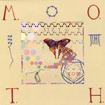

| Artist: | Syzygy |
| Title: | The Allegory Of Light |
| Label: | Independent |
| Length(s): | 63 minutes |
| Year(s) of release: | 2003 |
| Month of review: | [12/2003] |
| 1) | MOTH | 11.20 |
| 2) | Beggar's Tale | 2.47 |
| 3) | Distant Light | 5.35 |
In the age of Mankind
| 4) | Zinjanthropus | 12.31 |
| 5) | Industryopolis | 6.33 |
| 6) | Forbidden | 3.22 |
| 7) | Light Speed | 2.58 |
| 8) | The Journey Of Myrrdin | 17.29 |
Zinjanthropus is an instrumental that moves a bit more to the power jazzrock side, as we know from the King Crimson projects although the organ sounds at times remind of Jobson on Danger Money. Oddly enough the track starts out in a somewhat cheesy way, sort of like seventies Camel stuff, say Snowgoose era, although there are also hints of Steve Hackett's earlier solo work (especially the clock sounds from Clocks). The track isn't bad, but a little too uneventful too fill its length, apart from sounding a bit fragmental. Due to the strong drums, it almost sounds like a workshop recording. As the track continues, it becomes more tranquil, but it remains non committal. This doesn't deminish with Industryopolis. The music sounds like it's telling a story, with intonations and the like, but, just as with opera, melody is sacrificed to make the find. If there had been vocals, maybe a point would have been made, but now I feel the music is sacrificed whilst no point is made. Worst of both worlds, really.
Forbidden is a friendly sounding acoustic guitar with vocal track. The synths have a cello like feel. The track succeeds in creating a feeling intimacy. Once again: due to the friendly nature of the track, Baldassarre's voice suffices.
Light Speed is a short guitar directed track: double guitars, freaky drums and far off bass. The sort of track you'd expect from a guitar meister. Yawn. This leads smoothly in the also guitar bound start of The Journey Of Myrrdin. After a couple of minutes we seem to take a step back and regroup, but unfortunately we again move into a guitar bound section. As the track progresses the synths have their time to the fore as well, but the trumpet sound it imitates feels mostly pompous. The closing section is more gentle, but once again fails to convince.